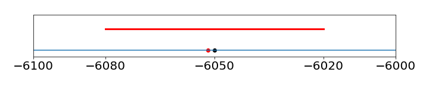

SI units, Rounding & converting units, Glossary.¶
SI units and prefixes¶
The International System of Units (SI) is nowadays used in all textbooks and much of the scientific literature. See Mills et al. (1993) or Cohen et al. (2007) for a full description of all units. The SI system is based on a set of defined units so that a quantity either has one of these units, or is derived from them. There is also a set of named prefixes for numerical values and these are shown below.
SI Defined units¶
The defined units are the metre (m), the kilogram (kg), the second (s), the kelvin, the unit of thermodynamics temperature (K), the ampere (A), the mole (mol), and the candela, which is luminous intensity (cd).
SI Derived units¶
All other units we use, such as the joule, are derived from these base units. The joule (J) measures energy and \(1 \,J = 1 \mathrm{\,kg\, m^2 \,s^{-2} }\). The SI unit for force, the newton (N) is derived from SI base units using the relationship:
One newton is defined as the force required to give a mass of 1 kilogram an acceleration of 1 metre per second per second.
\(^*\) Viscosity is still commonly quoted in centipoise (cP) where \(1 \mathrm{\,cP} = 10^{-3}\) Pa s and this unit is used because water has a viscosity of \(\approx 1\) cP at room temperature, and ethylene glycol about \(18\) cP.
Powers of 10 can be subsumed into the unit by use of prefixes
The bond length of HCl is \(0.00000000012745\) m; possible choices for recording this are
of which the final form is becoming common. The angstrom \(\overset{\lower 2pt\text{o}}{\mathrm{A}}\) is \(10^{-10}\) m and although not an SI unit, is still very frequently used. This bond length is \(1.2745 =\overset{\lower 2pt\text{o}}{\mathrm{A}}\).
Atomic units¶
When working at quantum problems, it is sometimes easier to use atomic units. In these units the electron charge \(e\) is taken to be 1 unit of charge and its mass \(m_e\) also 1 unit of mass. The energies are always electrostatic and hence proportional to \(e^2/(4\pi\epsilon_0)\) where \(\epsilon_0\) is the permittivity of free space and has units \(\mathrm{F \,m^{-1} = C^2\,J^{-1}\, m^{-1}}\). This quantity in SI units is \(\mathrm{C^2/(C^2\,J^{-1}\, m^{-1}) = J\,m}\) and therefore has dimensions mass \(\times\) length\(^3 \times\) time\(^{-2}\). Planck’s constant squared has units of \(\mathrm{(J s)^2 = mass^2 \times length^2 \times time^{-1}}\) and using these quantities can now define a length as
This is the Bohr radius and the unit of length in atomic units. It corresponds to the radius of the 1s orbit of a H atom. The unit of energy is the hartree, which is
and is twice the absolute value of the energy of the 1s electron in hydrogen or twice the ionization energy. The unit of time in atomic units is \(\hbar/E_h = 2.41888 \cdot 10^{-17}\) s.
Converting a number to different units¶
It is often necessary to convert between different sets of units. All non-SI units have a definition in terms of the corresponding SI units. An example conversion table for pressure is
*psi is pounds per square inch.
A good source of conversions is the CRC Handbook of Chemistry and Physics (Weast).
The search engine Google allows one to ask questions such as ‘calculate the speed of light in furlongs per fortnight’. The answer, by the way, is \(1.8 \times 10^{12}\) and a furlong is \(220\) yards. However, although these programs will do this for you it is clearly better to have an idea of what to do yourself.
To convert pressure data from the units of Torr to the SI unit of \(\mathrm{N\,m^{-2}}\) (or Pa), one of two methods can be used
Method 1; Direct Substitution¶
Substitute the value of \(1\) torr for its equivalent in \(\mathrm{N\,m^{-2}}\) as if ‘torr’ were a variable in the equation:
Method 2; Multiply by 1¶
This is the most reliable method to use. The equation is multiplied by \(1\) by using a unit conversion so that the unit to remove is on the denominator. For example from the definition of a torr,
and substituting makes the equation
and the units cancel giving the result in the new units. To express a pressure of \(62\) psi in Pascal, using the conversion table above and the ‘multiply by 1’ method, gives
Planck’s constant is \(h = 6.626 \cdot 10^{-34}\) J s, but in some cases it is easier to use this in units of eV ps where \(1 \mathrm{ps} = 10^{-12}\) s, and one electron volt, \(1 \mathrm{eV} = 1.602 \cdot 10^{-19}\) J, giving
This is even more useful in cm\(^{-1}\) ps, which is calculated as
making \(\hbar = 5.3 \mathrm{\,cm}^{-1}\) fs.
Table of Scientific Constants¶
Values mainly from CODATA 2018, and NIST SP961 2019.
** The molar mass of \(^{12}\)C is \(11.9999999958(36)\) g.
Some common and non SI unit conversions.¶
Significant figures and rounding numbers¶
A measurement always has two parts: a numerical value and its associated units. It is essential to report numbers to the appropriate number of decimal places. This is done either according to what is possible from the experimental conditions, or from the precision of numbers used in a calculation; and therefore some adjustment, called rounding, of the number is necessary.
There is no single or perfect way of representing a number and so there is room for some personal preference, but scientific notation offers the least ambiguity. To represent a number in this notation, write it with one leading digit followed by the decimal point and then more digits followed by a power of \(10\); for instance,
and the leading zeros in the second number are seen not to be significant. If a series of numbers are to be compared, then it is best to use the same power of \(10\) for each; for example, the following three numbers shows how the steady increase in value can easily be recognized. It is even clearer when these numbers are rounded up, say to the nearest 1000, and this gives the values shown on the right.
By the nature of any experiment, a measurement is only known to a certain number of significant digits. These are independent of the size of the number. For instance, \(123.4\) and \(0.00001234\), both contain four significant figures and these numbers can be written as \(1.234 \cdot 10^2\) and \(1.234 \cdot 10^{-5}\) respectively. The number \(123.40\) contains five significant figures, because writing the last zero implies that this digit is known. The limited number of significant figures occurs because of many unknown variations in the way a quantity is measured. Imprecision may occur due to a sloppy experimental technique, but supposing that this is not the case, ‘noise’ may be added to a measurement from any number of sources. By ‘noise’ is meant the random variability that is seen in any measurement that you would prefer is not there and which often masks the true signal. Perhaps this noise is due to interference from other instruments in the laboratory, from mains voltage fluctuations, or from temperature variations. Noise could be present because measurements were at the limit of your instrument’s capability. Often data is subsequently analysed to extract the information it contains; the slope of a line, for example, and then the number of significant figures reported as the slope and its uncertainty must be carefully considered. A calculator or computer will happily produce ten or more digits in an answer; almost invariably far more than is realistic. First, to decide how many significant figures there really are, the original data must be looked at before reaching a conclusion. The result can then be rounded to the correct number of significant figures at the very end of any calculation. Both the result and its associated error will need to be rounded, and this is done with a set of rules.
In rounding numbers we examine the last digit to be retained and
(1)\(\quad\) Retain no more digits beyond the first uncertain one.
\(\quad\)(i) Increase this digit by \(1\) if the residue is greater than \(5\).
\(\quad\)(ii) Leave this digit unchanged if the residue is less than \(5\).
\(\quad\)(ii) When the residue is exactly \(5\), leave this digit unchanged if previous one is even, or increase it by \(1\) if it is odd. This makes rounding unbiased.
Using these rules produces the following values when rounded to \(4\) significant figures or three decimal places.
\(\quad\)(i) \(\quad 1.02055 \to 1.021\); rule (i).
\(\quad\)(ii) \(\quad 1.02345 \to 1.023\); rule (ii).
\(\quad\)(iii) \(\quad 1.02350 \to 1.024\); rule (iii) increase by \(1\), as the last retained digit is \(3\).
\(\quad\)(iv) \(\quad 1.02450 \to 1.024\); rule (iii) unchanged as significant digit is \(4\) and is even.
(2)\(\quad\) In addition or subtraction, do not retain any more digits in the answer than the number with the smallest number of digits,
\(\qquad 21.1 + 2.035 + 6.12 = 29.255 \to 29.3\).
(3)\(\quad\) In multiplication or division, the result should have no more digits than the least precise number, which has the smallest number of significant digits:
\(\quad\)(i) \(\quad 21.1 \times 0.029 \times 83.2 = 50.91008 \to 51\), because \(0.029\) has \(2\) significant digits. This result would be better written as \(51.0\) because \(51\) implies that the number is an integer which is known exactly.
\(\quad\)(ii) \(\quad 291 \times 272/0.086 = 920 372.093 \to 9.2 \cdot 10^6\) because \(0.086\) has \(2\) digits.
(4)\(\quad\) The log of a number should have as many digits to the right of the decimal point (the mantissa) as there are significant digits in the number.
(5)\(\quad\) The mean of a number has as many significant figures as the observations upon which it is made; only such a number of significant digits should be retained so that the uncertainty in the mean corresponds approximately to its standard deviation.
Examples of these rules are
Experimental results with experimental uncertainties or errors¶
There are only a few instances is chemistry where a value you are trying to measure or calculate is an integer, for example a quantum number or the number of atoms in a unit cell of a crystal but in most cases the result will be a real number. The number of significant figures quoted indicates how precise you consider the number to be. As an example a mass of \(2.3457\) g measured on an analytical balance must be assumed to be somewhere in the range \(2.34565 \to 2.34575\), i.e an absolute error bound of \(0.00005\) g which is half the last significant figure.
The relative error bound is the absolute bound divided by the value itself, \(0.00005/2.3457 = 2.1315\cdot 10^{-5}\) or \(0.0000213\) but the error bound is \(0.00005\) so this answer is only significant as far as the \(5^{\mathrm{th}}\) decimal place or \(0.00002\) so is reported as \(2\cdot 10^{-5}\). The percentage error is \(100\) times the relative bound.
The error quoted with a measured mean value represents the chance that the data will fall between the error values quoted, usually this is approximately \(68\)%, meaning that by random chance \(32\)% of the times a measurement is made, a value outside the range will be observed. In some cases a \(95\)% limit may be used; this will depend on how the standard deviation or the standard error is defined and this is explained in more detail in Chapter 13. We shall suppose that this has been decided upon, so that just the numbers are examined. To report a result as \(7.56 \pm 0.03456\) kJ/mole would be wrong. It is reasonable to assume that the result is the mean value of several measurements because an error is given. The mean is quoted to only three significant figures, one part in a thousand, or two decimal places, and as the error is usually calculated from the data, it cannot be known to more figures than this. The result should be reported as \(7.56 \pm 0.03\) kJ/mole as the \(3\) in the quoted error falls in the same decimal place as the \(6\) in the number. If you want to be cautious, then \(7.56 \pm 0.04\) would be acceptable as would \(7.56 \pm 0.03_4\) to indicate the figure that could be rounded.
As a rule of thumb, experimental uncertainties (errors) should be rounded to one significant figure, unless the measurement is very precise, then two figures may be used. The error would normally always be rounded up. Once the uncertainty in the measurement is determined, the significant figures in the measured value may need to be revised. This would be the case if the error were determined by some means other than from analysing the data. Reporting \(\Delta G = -6051.78 \pm 30\) J/mole is just not reasonable as the error is so large; the result should be \(\Delta G = -6050\pm 30 \) J/mole, as an uncertainty of \(30\) means that the result could be as small as \(6020\) or as large as \(6080\), so that the trailing digits, \(1, 7, 8\) do not matter; see figure 26.
A second rule of thumb is that the last significant figure in any stated answer should be of the same order of magnitude, i.e. in the same decimal position, as the uncertainty. For example,
In the last case, the rounded result is a little smaller than the result but the error is so large that this is of no consequence. In other words, the \(92.81\) is only one of many results that could have been obtained had the experiment been repeated many more times and values from at least \(60 \to 120\) are to be expected. In cases such as \(92.5\pm 0.35\), you might not want to round up either to \(93\) or down to \(92\). In this case the rounded number could be reported as \((0.92_5 \pm 0.04) \times 10^2\).

Figure 26. Illustrating the error of \(\pm 30\) on the number \(-6051.78\). The red dot is the original number, the blue dot the rounded one, and the red line the error.
Glossary of Selected Mathematical Symbols¶
Other more complex symbols such as for differentiation are given when their usage is described in the text.